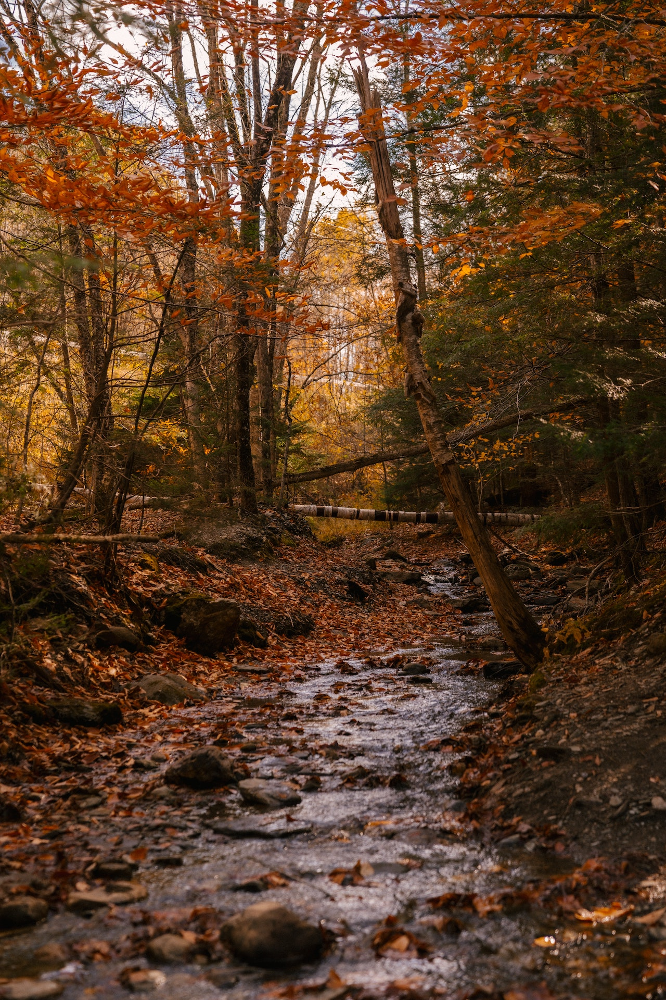
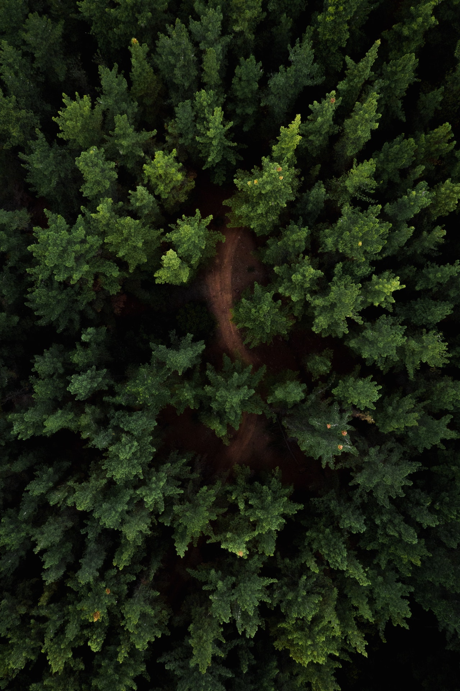
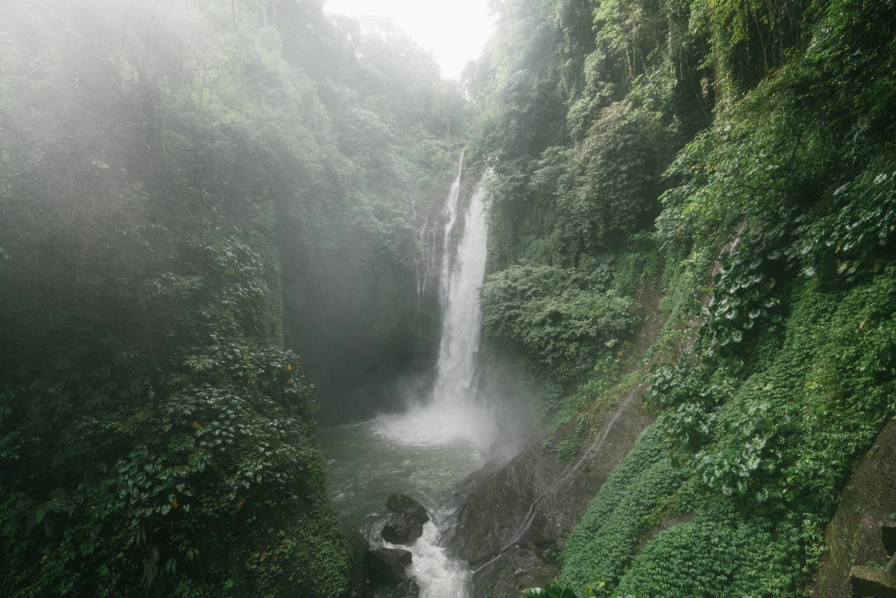

“Az erdő olyan természetes vagy telepített élőhely, amelynek jellegét a sűrűn álló fák határozzák meg. Az erdők a Föld talán legkomplexebb életközösségei, amelyben egyaránt megtaláljuk a talajban élő mikroorganizmusokat, a földfelszínen élő mohákat, gombákat, lágy- és fás szárú növényeket. Állatvilága többnyire rendkívül gazdag, hosszú táplálékláncokkal.”

Lombhullató erdők
A Kárpát-medence legnagyobb része éghajlati adottságai révén – klímazonálisan – a lombhullató erdők övében fekszik. Ennek megfelelően a szárazföldi, természetközeli állapotban lévő társulások egy jelentős része fás vagy más néven erdőtársulás. Az erdők lehetnek klímazonális erdők, abban az esetben, ha alapvetően az éghajlati viszonyok befolyásolják fajösszetételüket és szerkezetük kialakulását.

Tűlevelű erdők
A mérsékelt övi tűlevelű erdők jellemző helye a tajga. Ott fordul elő, ahol a nyár túl rövid, a tél pedig túl hosszú ahhoz, hogy a lomblevelű erdők megéljenek. A tajgazóna, amely az északi félteke mérsékelt égövét a hideg égöv felé határolja, a déli féltekén azért nem alakulhatott ki, mert a létrejöttéhez kedvező klimatikus adottságú területeket csaknem mindenhol tenger borítja .

Esőerdők
Esőerdőknek az erősen csapadékos (1500-10 000 mm/év) éghajlaton növő erdőtársulásokat nevezzük. A csapadékos, meleg és viszonylag állandó időjárás mellett, különösen az Egyenlítőhöz közel, az élőlények rendkívüli sokfélesége alakult ki. Ez a rovar-, madár-, és fafajok hatalmas számában is megmutatkozik. Területük zsugorodik túlzott fakitermelés, mezőgazdasági használat miatt, és nagyon nehezen állnak helyre.